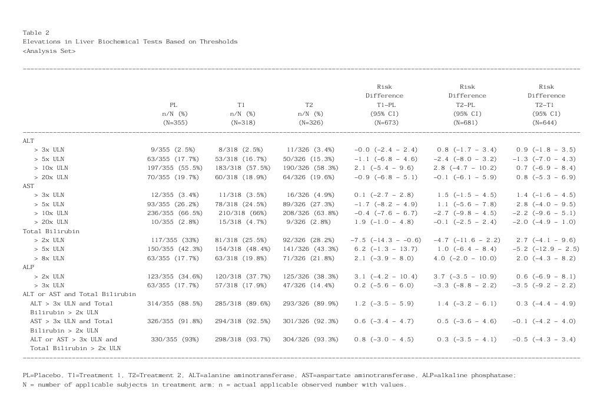

Table 2: Elevations in Liver Biochemical Tests Based on Thresholds
The datasets used for the program are modified versions of the ADLB.Rda & ADSL.Rda
from the random.cdisc.data library. Copy the code below to generate a table of
elevations in liver biochemical tests based on thresholds.
Generated output is below:
